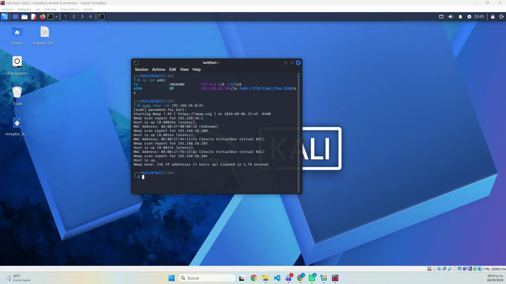
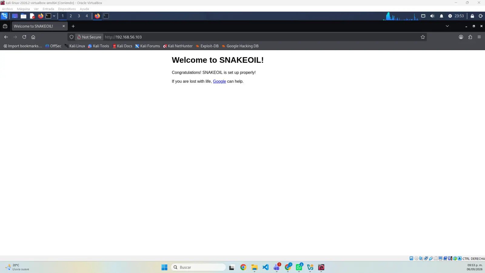
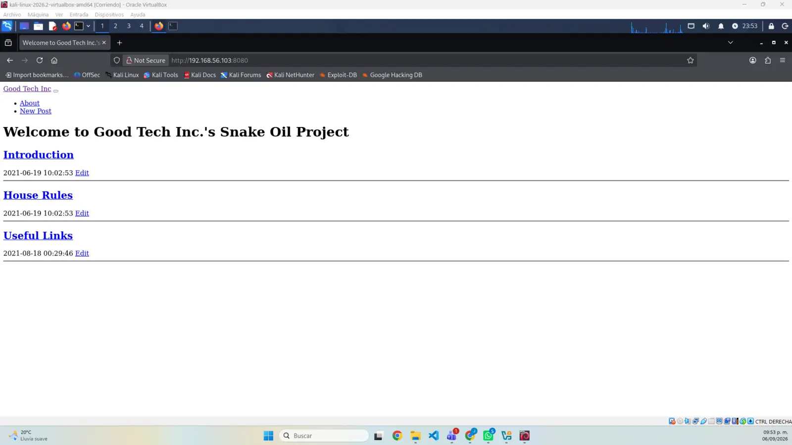
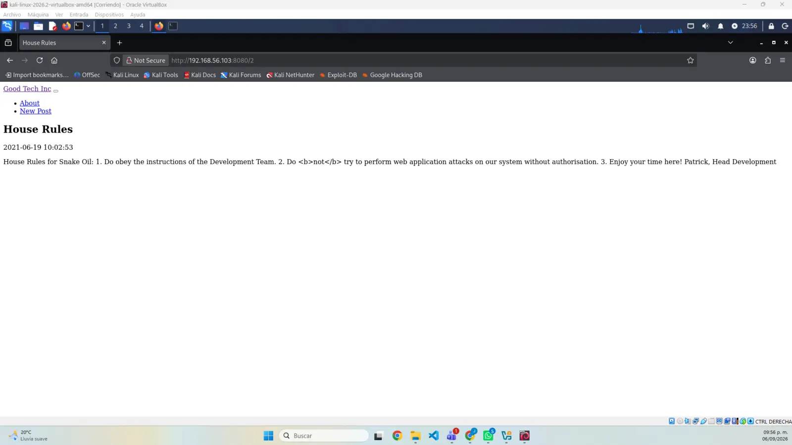
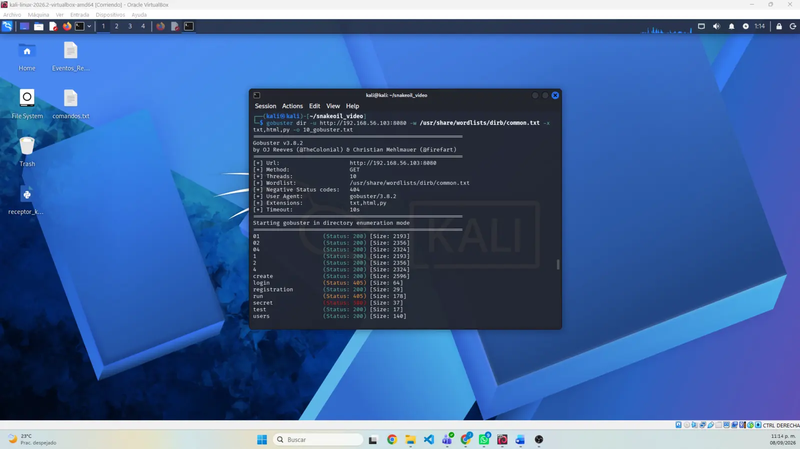
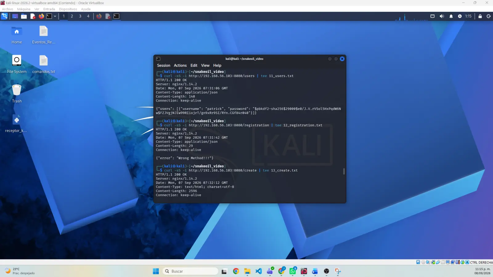

Objetivo
digitalworld.local fue identificado en la dirección privada 192.168.56.103.
Parcial 01 · Actividad 05
Evaluación progresiva de la máquina virtual vulnerable digitalworld.local, desde el aislamiento del laboratorio hasta el reconocimiento de servicios y la enumeración inicial de la aplicación web.
01 / OBJETIVO
El propósito es aplicar un flujo ordenado de reconocimiento sobre una máquina diseñada para prácticas educativas. La evidencia identifica el objetivo, registra los servicios expuestos, examina el contenido web y conserva los resultados necesarios para continuar el análisis sin salir del entorno autorizado.
02 / METODOLOGÍA
03 / HALLAZGOS ACTUALES
digitalworld.local fue identificado en la dirección privada 192.168.56.103.
Servicio SSH disponible. La evidencia se limita a identificación de versión y exposición.
Página de bienvenida que confirma la configuración básica de Snakeoil.
Aplicación web Good Tech Inc.'s Snake Oil Project con publicaciones y rutas adicionales.
Una publicación menciona Flask y JSON Web Tokens mediante Flask-JWT-Extended.
Se documentaron respuestas de /users, /create, /registration, /test, /secret, /login y /run.
04 / AVANCE DOCUMENTADO
Máquinas importadas, red solo-anfitrión comprobada y objetivo aislado.
Descubrimiento del objetivo y escaneo de los 65,535 puertos TCP.
Contenido de los puertos 80 y 8080 revisado y documentado.
Rutas, códigos de respuesta y métodos permitidos registrados sin modificar datos.
Las siguientes pruebas deberán conservar el mismo alcance, evidencia y criterio de validación.
05 / EVIDENCIAS
Las capturas conservan el recorrido realizado hasta el avance actual. Cada imagen se puede abrir en tamaño completo.



192.168.56.103.








/users.
/create y /registration.
/test y /secret.
/login y /run.06 / PENDIENTES DE ENTREGA
La página y las capturas ya están incorporadas. Estos bloques permanecerán desactivados hasta contar con las versiones definitivas, evitando enlaces vacíos o errores 404.
07 / REFLEXIÓN
El recorrido mostró la importancia de avanzar por etapas y separar observación de comprobación. Descubrir una ruta, una tecnología o una respuesta distinta sirve para orientar la investigación, pero no autoriza conclusiones sin evidencia adicional. Registrar cada comando y conservar el laboratorio aislado permite continuar de manera ordenada y reproducible.